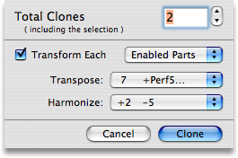

Page Index
The Filter Menu
The menu contains commands that you can use to make sweeping changes to whole groups of chords across multiple parts. So for example you can change a chord progression to an entirely different key or set it entirely in reverse. Some filters provide helpful randomness. Filters are a lot of fun.
The Filter menu contains three submenus containing identical filters, except that they affect different sets of parts.
- All Parts : Always affects all parts regardless of which parts are filter-enabled in the Channels Palette.
- Enabled Parts : Only affects filter-enabled parts as specified in the Channels Palette. This allows you to perform an "atomic" filter operation to affects multiple parts at once without needing to execute the same filter on one part after another.
- The Current Part : Always affects the current, visible part regardless of which parts are filter-enabled in the Channels Palette.
Filter Descriptions
- CloneTOP
-
Clone makes multiple copies of the selected chords and optionally transforms each copy. When you select the Clone filter a sheet appears with some useful options.
Enter a Total Clones number from 2 to 9999. This will be the resulting number of clones (including the original selection).
If you want to transform each clone as they are created check the Transform Each checkbox. Then choose which parts to affect and the amount to transpose and / or harmonize each clone. Transformations are cumulative, so if you make 4 clones of a C chord, transposing each one by a fifth, the resulting chords will be C, G, D, A.
- SplayTOP
-
Splay makes multiple single-repeat copies of chords having a repeat greater than 1. For example, if you have a C chord with a repeat of 16 and a D chord with a repeat of 4, when you Splay them you'll get 16 C chords with a repeat of 1 and 4 D chords with a repeat of 1. To reverse this effect, use the Consolidate filter.
- ConsolidateTOP
-
Consolidate combines each contiguous set of identical chords in the selection into as few individual chords as possible with the repeats set as high as necessary. For example, if you have 4 C chords selected, each with a repeat of 2, you'll get a single C chord with a repeat of 8. This filter will only affect chords that are completely identical in all four parts. More or less the opposite of Splay.
- DoubleTOP
-
This filter doubles the amount of time occupied by the selected chords, stretching the picking patterns so that they take up twice as much time.
- ScrambleTOP
-
Use this filter to randomly scramble the selected chords.
- Reverse ChordsTOP
-
This filter reverses the selected chords, leaving their picking patterns unaffected.
- Reverse MelodyTOP
-
The Reverse Melody filter reverses the selected chords and their picking patterns.
- Pattern: ClearTOP
-
Clear the picking patterns of the selected chords.
- Pattern: ReverseTOP
-
Reverse the picking patterns of the selected chords.
- Pattern: FlipTOP
-
Vertically flip the picking patterns of the selected chords.
- Pattern: Random 1 and 2TOP
-
Set the picking sequence of the selected chords to a random pattern. Random 1 generates unusual patterns algorithmically. Random 2 generates patterns which simply have one dot per tick mark.
- Tones: ClearTOP
-
Clear the tones of the selected chords.
- Tones: InvertTOP
-
Invert the tones of the selected chords. For example, a C chord built on the C Ionian scale (C-E-G) will be changed to D-F-A-B (the other tones in C Ionian).
- Tones: CleanupTOP
-
Remove all tones from the chord which aren't used in the chord fingering. This only remvoves the tones which aren't held down in the fingering. Tones which are held down, but which aren't used in the picking pattern will still be retained.
- Harmonize UpTOP
-
Harmonize the selected chords by a single step forward (according to each chord's key).
- Harmonize DownTOP
-
Harmonize the selected chords by a single step backward (according to each chord's key).
- Harmonize By →TOP
-
Harmonize the selected chords by a specified number of steps forward (according to each chord's key).
- Transpose To →TOP
-
Transpose the selected chords to a specified key. For example if you select a C chord based in the key of C and a G chord based in the key of D and transpose them both to G, the resulting chords will be D and C, both in the key of G.
- Transpose By →TOP
-
Transpose the selected chords by a specified number of chromatic key-steps. For example if you select a C chord based in the key of C and a G chord based in the key of D and transpose them both by a perfect fifth, the resulting chords will be G in the key of G and D in the key of A.
- Lock / UnlockTOP
-
Lock or unlock the roots of the selected chords.